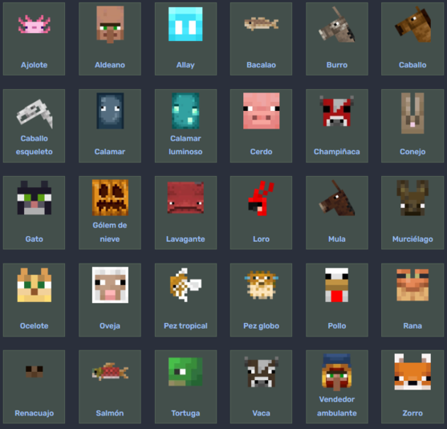
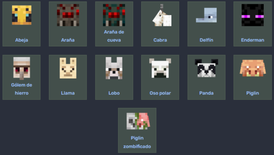
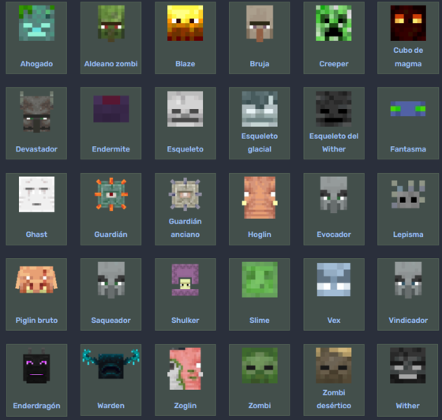

Mobs
Galería de Actualizaciones
-
Biografía de Notch
-
Mobs
-
Herramientas y usos
-
Biomas
-
Dimensiones
Las criaturas o mobs (derivado del ingles mobile ) son entidades con Inteligencia Artificial que pueden realizar varias acciones dentro de Minecraft, como caminar, modificar bloques, atacar a otras entidades, recibir daño, etc.
Hay 3 tipos de Mobs dentro de Minecraft:
- Pasivos
Son aquellos mobs que no atacarán al jugador bajo ninguna condición, aunque estos reciban daño.
Los mobs pasivos son:

- Neutrales
Son aquellos que se mantienen mayormente pasivos, pero atacarán al jugador bajo ciertas condiciones. (Por ejemplo, las abejas se vuelven hostiles cuando el jugador rompe su colmena, los enderman cuando los miran a los ojos o las arañas cuando es de noche)
Los mobs neutrales son:

- Hostiles
Son aquellos que siempre atacarán al jugador cuando este se aproxime a ellos. Los jefes también cuentan como criaturas hostiles, ya que siempre tratarán de atacar al jugador.
Los mobs hostiles son:

Página Oficial